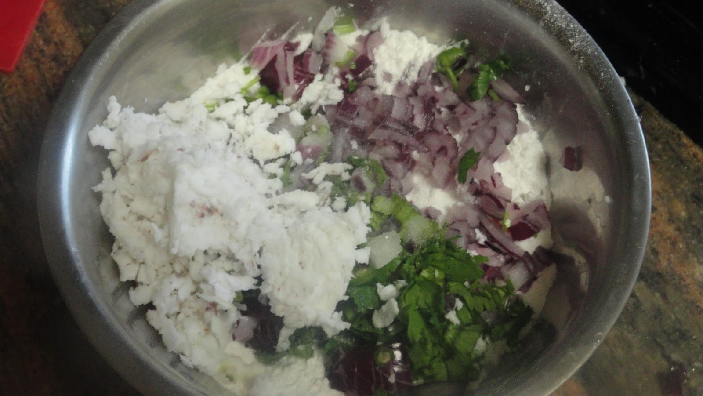

Masala Akki Rotti is a traditional South Indian dish that hails from the state of Karnataka, known for its rich culinary heritage. This dish is a variation of the popular Akki Rotti, a type of Indian flatbread made from rice flour. The word "akki" refers to rice in the Kannada language, which is the primary language spoken in Karnataka. The history of Masala Akki Rotti can be traced back to rural households in Karnataka, where it was often prepared as a wholesome and filling breakfast or snack. It was born out of the necessity to create a nutritious and flavorful dish using simple, locally available ingredients. The addition of "masala" in the name indicates the use of a spiced mixture to enhance the flavor profile. The preparation of Masala Akki Rotti involves combining rice flour with a medley of finely chopped vegetables, aromatic spices, and herbs. Common additions include onions, green chilies, cilantro, grated coconut, and sometimes grated carrot or cabbage. This mixture is kneaded into a dough, and small portions are flattened into thin, round discs on a hot griddle or tawa. The flavor of Masala Akki Rotti is a delightful amalgamation of the earthy taste of rice flour, the sweetness of coconut, the crunchiness of vegetables, and the heat from the green chilies. The spices, such as cumin and coriander, contribute to the overall aromatic appeal. The rotti is usually cooked until it develops a golden brown crust, providing a contrast to the soft interior.
Akki Rotti Recipe

Ingredients Required
2 cups Rice flour
1/4 cup Fresh coconut, grated
1 Carrot (Gajjar), grated
1 Green Bell Pepper (Capsicum), finely chopped
1/4 cup Dill leaves, finely chopped
1/4 cup Cabbage (Patta Gobi/ Muttaikose), finely chopped
1 Onion, finely chopped
1 inch Ginger, finely chopped
2 Green Chillies, finely chopped
1/2 teaspoon Cumin seeds (Jeera)
1/4 teaspoon Asafoetida (hing)
Salt, to taste
Oil, to cookr
Instructions
To begin making the Masala Akki Roti Recipe, add rice flour, carrots,cabbage,capsicum,onion, coconut, cumin seeds, green chillies, ginger, asafoetida and salt to taste into a large mixing bowl.
Mix all the ingredients well and then knead the dough adding little warm water at a time. The dough should be soft. We will require around 1 cup of water to knead the dough.
Once the dough comes to shape cover and allow Masala Akki Roti dough to rest for 10-15 mins.
After 15 minutes grease your palm and make large lemon size portions of the akki roti dough and keep aside.
Pre heat a non stick tawa or roti pan.
Now wet a muslin cloth with water or grease a plantain leaf. Grease your palm and place a portion of the dough at the center of the cloth . Using your fingers pat the dough to make circular discs of medium thickness.
Make three small holes in the akki roti for even cooking of the akki roti
Preheat a skillet over medium heat and grease the skillet.
Carefully invert the akki roti onto the preheated pan and peel out the cloth or the leaf.
Cook the Masala Akki Roti on medium heat for a few seconds. Flip the roti and drizzle a teaspoon of oil around the roti and cook it on both sides until brown spots appear.
Once done, remove Masala Akki Roti from heat and serve warm.
Serve the Masala Akki Roti along with Coconut Chutney and Ghee for a breakfast or an evening tea time snack along with a hot cup of Filter Coffee or Masala Chai.
 South Indian Recipes
South Indian Recipes Masala Akki Rotti is a traditional South Indian dish that hails from the state of Karnataka, known for its rich culinary heritage. This dish is a variation of the popular Akki Rotti, a type of Indian flatbread made from rice flour. The word "akki" refers to rice in the Kannada language, which is the primary language spoken in Karnataka. The history of Masala Akki Rotti can be traced back to rural households in Karnataka, where it was often prepared as a wholesome and filling breakfast or snack. It was born out of the necessity to create a nutritious and flavorful dish using simple, locally available ingredients. The addition of "masala" in the name indicates the use of a spiced mixture to enhance the flavor profile. The preparation of Masala Akki Rotti involves combining rice flour with a medley of finely chopped vegetables, aromatic spices, and herbs. Common additions include onions, green chilies, cilantro, grated coconut, and sometimes grated carrot or cabbage. This mixture is kneaded into a dough, and small portions are flattened into thin, round discs on a hot griddle or tawa. The flavor of Masala Akki Rotti is a delightful amalgamation of the earthy taste of rice flour, the sweetness of coconut, the crunchiness of vegetables, and the heat from the green chilies. The spices, such as cumin and coriander, contribute to the overall aromatic appeal. The rotti is usually cooked until it develops a golden brown crust, providing a contrast to the soft interior.
Masala Akki Rotti is a traditional South Indian dish that hails from the state of Karnataka, known for its rich culinary heritage. This dish is a variation of the popular Akki Rotti, a type of Indian flatbread made from rice flour. The word "akki" refers to rice in the Kannada language, which is the primary language spoken in Karnataka. The history of Masala Akki Rotti can be traced back to rural households in Karnataka, where it was often prepared as a wholesome and filling breakfast or snack. It was born out of the necessity to create a nutritious and flavorful dish using simple, locally available ingredients. The addition of "masala" in the name indicates the use of a spiced mixture to enhance the flavor profile. The preparation of Masala Akki Rotti involves combining rice flour with a medley of finely chopped vegetables, aromatic spices, and herbs. Common additions include onions, green chilies, cilantro, grated coconut, and sometimes grated carrot or cabbage. This mixture is kneaded into a dough, and small portions are flattened into thin, round discs on a hot griddle or tawa. The flavor of Masala Akki Rotti is a delightful amalgamation of the earthy taste of rice flour, the sweetness of coconut, the crunchiness of vegetables, and the heat from the green chilies. The spices, such as cumin and coriander, contribute to the overall aromatic appeal. The rotti is usually cooked until it develops a golden brown crust, providing a contrast to the soft interior.